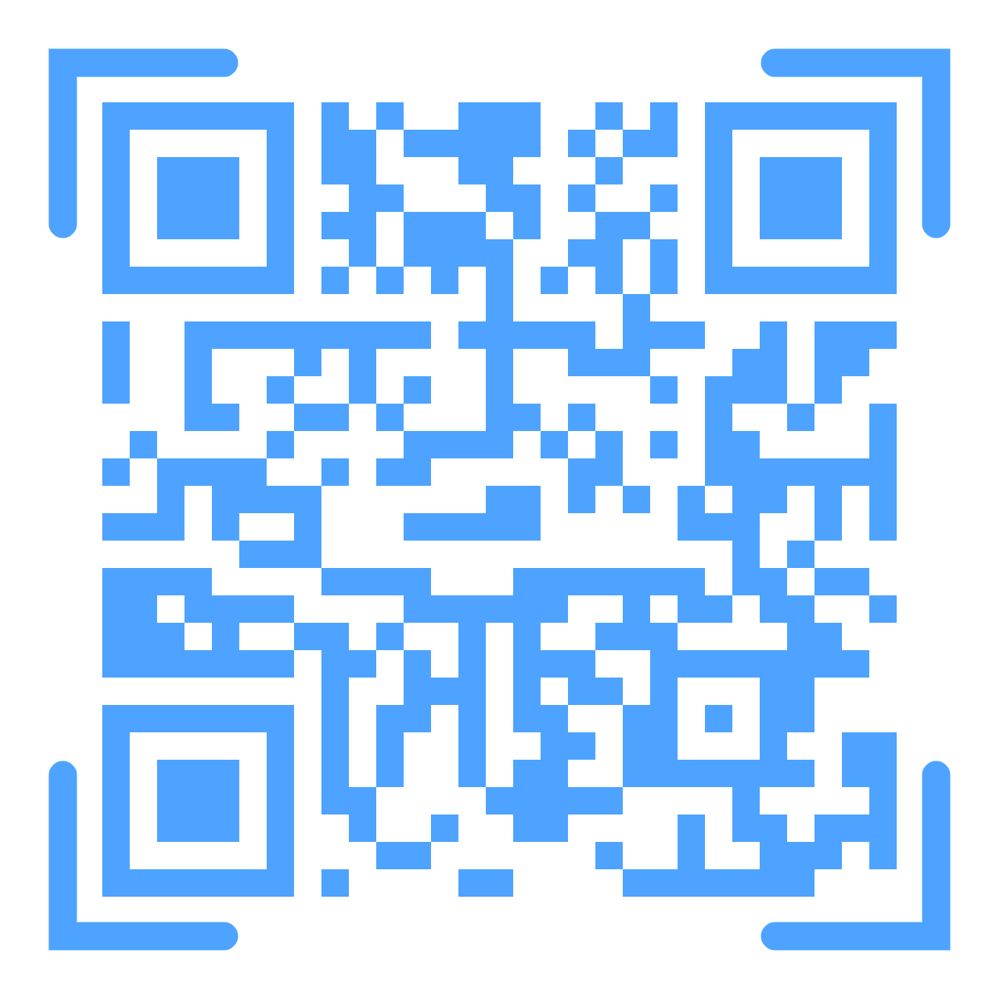
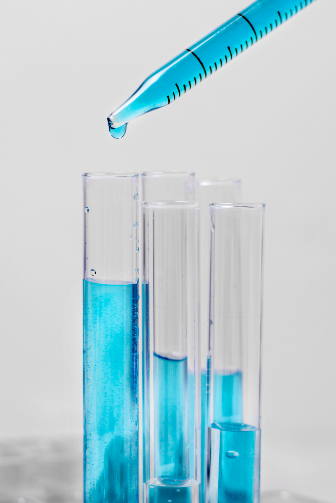

Acesso
Para adentrar no laboratório não tem muito segredo, pois o mesmo está localizado no mesmo local do antigo, mas para quem não sabe onde o mesmo fica, é no último andar passando pelo corredor

Para adentrar no laboratório não tem muito segredo, pois o mesmo está localizado no mesmo local do antigo, mas para quem não sabe onde o mesmo fica, é no último andar passando pelo corredor
Para que possa-se explorar o aprendizado passado dentro do laboratório, os alunos não só devem tratar os equipamentos com cuidado, mas também o professor/responsável com devido respeito.
Isso é:
Utilize, de forma correta, os equipamentos de proteção: luvas, óculos de proteção, tocas e máscaras (quando necessário).Esses equipamentos serão distribuídos por um responsável. Contudo, durante todo o experimento, os EPIs (Equipamentos de Proteção Individual), não devem ser retirados para não gerar exposição a algumas substâncias.

É de extrema importância o uso de jaleco de mangas compridas, calças e calçados fechados (botas, sapatos e tênis). Mantenha cabelos longos presos e evite o uso de acessórios, utensílios e de qualquer outro item que possa interferir em algum experimento.
Mantenha, constantemente, as mãos limpas, higienizando-as no início e no fim dos experimentos. É necessário evitar:- tocar nos reagentes e em seguida encostar no rosto (olhos, boca, etc).- ambiente e utensílios sujos É proibido a ingestão de bebidas e comidas no laboratório. Qualquer objeto que seja destinado ao consumo deve ser descartado para que não haja possibilidades de contaminação.
Para que se possa haver um manuseio adequado dos produtos disponibilizados dentro do laboratório, as seguintes providências têm que ser tomadas:Sempre utilizar luva e devido epi para vidraças, químicos e etc, a supervisão do professor e sua autorização prévia são obrigatórias e ademais opte por ver o responsável manusear tais reagentes antes de você usar, para que se possa ter melhor cuidado e aproveitamento